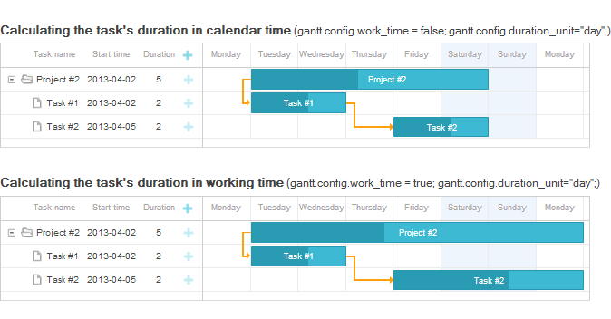
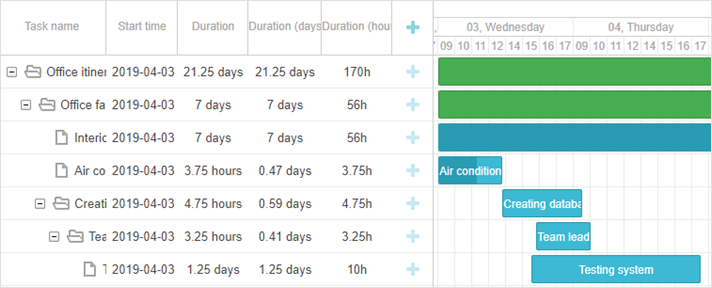
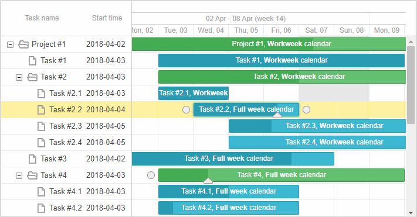

By default, dhtmlxGantt calculates the duration of tasks in calendar time. It assumes that the final duration of the tasks can include weekends and holidays.
To provide calculating tasks' duration in work time, use the work_time option:
Enabling the mode when tasks' duration is calculated in working time
gantt.config.work_time = true; // removes non-working time from calculations gantt.config.skip_off_time = true; // hides non-working time in the chart
gantt.init("gantt_here");
Please note that the skip_off_time config option is available in the PRO version only.
Related sample: Working days as duration
Depending on the value of duration_unit, dhtmlxGantt calculates the tasks' duration in different time units (e.g. if duration_unit = "hour", the duration is calculated in the working hours).

This functionality is available in the PRO edition only.
Starting from v6.3 dhtmlxGantt allows specifying the duration of tasks in decimal format ("2.5 days",
"0.5 hours", "3.75 hours") via the Duration Formatter module.
The important point to remember is that internally Gantt always stores the duration of tasks in integer values.
Whereas, the provided module allows parsing the duration of tasks from the format entered by the user into the format stored in Gantt (for example, instead of entered "1.5 hours" Gantt will store the number of minutes - 90). Besides, the stored values can be converted into the readable format (from 12 hours to "0.5 days").

The duration of tasks can be represented as a fraction of an hour, day or any other supported by the duration_unit config unit, except for minutes.
To provide displaying the duration of tasks in decimal format, follow the logic given below:
gantt.config.work_time = true;
gantt.config.duration_unit = "minute";
Pay attention that you need to store task durations in a smaller unit than the units of the values displayed in decimal format. To put it simply:
- if you want a user to be able to specify durations as a fraction of an hour (e.g. "0.5 hours"), you need to set duration_unit to minute
- If you want a user to be able to specify durations as a fraction of a day, you need to set duration_unit to hour. In this case, users will be able to enter the duration of the task as "0.5 day", but "0.5 hour" will be rounded up to 1 hour, since the duration will be stored in integer hours.
By default, task dates are snapped to the time scale. If you have a time scale in days, you may want to disable it in order to be able to drag and drop a task to different hours within a day.
To enable this drag and drop, you need to disable round_dnd_dates and set an appropriate value to time_step.
For example:
// global time step is 15 minutes, requires "minute" as duration units
gantt.config.time_step = 15;
gantt.config.round_dnd_dates = false;
or
// global time step is one hour,
// such value can be used when duration unit is set to "hour"
gantt.config.time_step = 60;
gantt.config.round_dnd_dates = false;
// formatting the duration
var formatter = gantt.ext.formatters.durationFormatter({
enter: "day",
store: "minute", // duration_unit
format: "day",
hoursPerDay: 8,
hoursPerWeek: 40,
daysPerMonth: 30
});
gantt.config.columns = [
{name: "text", tree: true, width: 170, resize: true, editor: textEditor},
{name: "start_date", align: "center", resize: true, editor: dateEditor},
{name: "duration", label:"Duration", resize: true, align: "center",
template: function(task) { return formatter.format(task.duration); }, width: 100},
{name: "add", width: 44}
];
gantt.config.lightbox.sections = [
{name: "description", height: 70, map_to: "text", type: "textarea", focus: true},
{name: "time", type: "duration", map_to: "auto", formatter: formatter}
];
var durationEditor = {
type: "duration",
map_to: "duration",
formatter: formatter, min:0, max:1000
};
gantt.config.columns = [
{name: "text", tree: true, width: 170, resize: true},
{name: "start_date", align: "center", resize: true},
{name: "duration", label:"Duration", resize: true, align: "center",
template: function(task) {
return formatter.format(task.duration);
}, editor: durationEditor, width: 100}, {name: "add", width: 44}
];
If you already have Gantt with the duration of tasks stored in minutes, hours or any other unit, you can also use the Duration Formatter module to present the durations in decimal format.
The default working time is the following:
(hours configuration is taken into account only when duration_unit is less than a day (hours or minutes)).
To change the default working time, use the setWorkTime method:
Setting a custom working time
//changes the working time of working days
gantt.setWorkTime({ hours:["9:00-18:00"] });
//makes all Fridays days-off
gantt.setWorkTime({ day:5, hours:false });
//changes the working time for Fridays and Saturdays
gantt.setWorkTime({day : 5, hours : ["8:00-12:00"]});
gantt.setWorkTime({day : 6, hours : ["8:00-12:00"]});
//makes a specific date a working day
gantt.setWorkTime({date : new Date(2019, 2, 31)});
//makes a specific date a day-off
gantt.setWorkTime({date:new Date(2019,0,1), hours:false})
Related sample: Custom working days and time
To specify the working time not only from an hour to hour (e.g."8:00-12:00") but also including minutes (e.g. "8:15-12:45"), set the duration_unit config to "minute".
Setting a custom working time up to minutes
gantt.config.duration_unit = "minute";
// sets the working time up to minutes
gantt.setWorkTime({hours:["8:15-12:45"]});
The format of the working time that was used up to version 7.0 will continue work as before:
gantt.setWorkTime({hours:[9, 18]})
Note, each next call of the method for the same date will re-write the previous working-time rule. So, if you need to unset some rule, call the setWorkTime method with other configuration:
gantt.setWorkTime({hours:["8:00-12:00"]});
gantt.setWorkTime({hours:["13:00-17:00"]});
//the result of following commands will be the working time 13:00-17:00
//and not a mixin of both commands
You can unset a working time by using the unsetWorkTime method:
//changes the working time of working days from ["8:00-17:00"] to ["8:00-12:00"]
gantt.setWorkTime({hours:["8:00-12:00"]});
//unsets the working time
gantt.unsetWorkTime({hours:["8:00-12:00"]});
To check whether the specified date is working time, use the isWorkTime method:
//makes 1 January, 2019 a day off
gantt.setWorkTime({date:new Date(2019,0,1), hours:false});
gantt.isWorkTime(new Date(2019,0,1)) // -> false
// makes 15 March, 2019 a working day from 9:00 till 18:00
gantt.setWorkTime({date : new Date(2019, 2, 15), hours:["8:00-17:00"]});
gantt.isWorkTime(new Date(2019, 2, 15,10,0), "hour"); // -> true gantt.isWorkTime(new Date(2019, 2, 15,8,0), "hour"); // ->false
Related sample: Correct task position on drag
To get the working hours of the specified date, use the getWorkHours method:
gantt.getWorkHours(new Date(2019,3,30))// -> ["8:00-17:00"]
To get the closest working day to the specified date, use the getClosestWorkTime method:
gantt.getClosestWorkTime(new Date(2019,3,30));
You may often need to specify some working time that will repeat only on certain days (e.g. the last Friday of a month is a short day, December 25 is a holiday) but during the whole span of the project.
The current version of dhtmlxGantt doesn't provide any configs for setting such type of the working time and the library allows you only:
So if you have some exceptions to the working time rules you need to manually get the dates that match your rule and apply worktime settings to each of these dates separately.
For example, you have a project that lasts 5 years and you want to set the 1st of January as a day-off, and the last Friday of each month as a short day.
To specify the 1st of January as a day off you can simply hardcode values as in:
gantt.setWorkTime({hours:false, date: new Date(2021, 0, 1)});
gantt.setWorkTime({hours:false, date: new Date(2022, 0, 1)});
gantt.setWorkTime({hours:false, date: new Date(2023, 0, 1)});
gantt.setWorkTime({hours:false, date: new Date(2024, 0, 1)});
gantt.setWorkTime({hours:false, date: new Date(2025, 0, 1)});
And here is a code sample of how to set the last Friday of a month as a short day during the whole project:
function lastFridayOfMonth(date) {
var lastDay = new Date(date.getFullYear, date.getMonth()+1, 0);
if(lastDay.getDay() < 5) {
lastDay.setDate(lastDay.getDate() - 7);
}
lastDay.setDate(lastDay.getDate() - (lastDay.getDay() -5));
return lastDay;
}
var projectStart = new Date(2020, 5, 1);
var projectEnd = new Date(2025, 5, 1);
var currentDate = new Date(projectStart);
while (currentDate.valueOf() <= projectEnd.valueOf()){
var lastFriday = lastFridayOfMonth(currentDate);
gantt.setWorkTime({hours:["8:00-12:00", "13:00-15:00"], date: lastFriday});
currentDate = gantt.date.add(currentDate, 1, "month");
}
To color the day-off times in the chart area, use the timeline_cell_class template:
gantt.templates.timeline_cell_class = function(task, date){
if(!gantt.isWorkTime({task:task, date: date}))
return "week_end";
return "";
};
Related sample: Custom working days and time
Learn more in the Highlighting Time Slots article.
To hide the day-off time, use the technique described in the article - Hiding Time Units in the Scale.
In addition to global working time settings, Gantt allows creating multiple work time calendars. You can assign them to individual tasks or groups of tasks.
A new calendar instance can be created using the createCalendar method.
This method presupposes two possible options:
var calendar = gantt.createCalendar();
var newCalendar = gantt.createCalendar(calendar);
The calendar object is initially detached from Gantt and won't take any effect until you add it into Gantt.
After you've created a calendar, you have to add it into Gantt with the help of the addCalendar method. Once again, there are two possibilities:
var calendarId = gantt.addCalendar(calendar);
var calendarId = gantt.addCalendar({
id:"custom", // optional
worktime: {
hours: ["8:00-17:00"],
days: [ 1, 1, 1, 1, 1, 1 ,1]
}
});
You can also use this option for creating a calendar.
You can get the objects of working calendars to work with them later on. There are several available options which are described below.
To get the object of the global Gantt calendar using the getCalendar calendar:
var calendar = gantt.getCalendar(id);
The calendar object is an instance of the calendar interface.
The default calendar instance (global settings) can be accessed by the predefined "global" id:
var globalSettings = gantt.getCalendar("global");
This calendar is used by the work time methods, when there is no other calendar specified. It is assigned to tasks by default.
To get the object of a working calendar assigned to a particular task, apply the getTaskCalendar method. You need to pass the task object to the method:
var task = gantt.getTask(taskId);
var calendar = gantt.getTaskCalendar(task);
if(calendar.isWorkTime(date)){
alert("TaskWorkTime");
}
Related sample: Task level calendars
If work time is disabled in the gantt config, the method will return a 24/7 work time calendar.
The work time methods of the Gantt object can be used to calculate the time duration of a specific task, without accessing its calendar manually.
In that case methods take an object argument where the related "task" object is passed as one of the properties.
if (gantt.isWorkTime({date: date, task: task})){
alert("work time of a task" + task.text);
}
Which is equal to:
var calendar = gantt.getTaskCalendar(task);
if (calendar.isWorkTime({date: date})){
alert("work time of a task" + task.text);
}
var end_date = gantt.calculateEndDate({start_date:date, duration:duration, task:task});
// or
var end_date = gantt.calculateEndDate(task);
var duration = gantt.calculateDuration({start_date:start, end_date:end, task:task});
// or
var duration = gantt.calculateDuration(task);
var closestTime = gantt.getClosestWorkTime({date: date, task:task});
To get all the calendars added into Gantt (both the global one and those assigned to separate tasks), make use of the getCalendars method:
var calendars = gantt.getCalendars();
The method returns an array of Calendar interface objects.
In case, you don't need a calendar anymore, you can easily remove it via the deleteCalendar method. You should pass the calendar id to this method:
// adding a calendar
gantt.addCalendar({
id:"custom",
worktime: {
hours: ["8:00-17:00"],
days: [ 1, 1, 1, 1, 1, 1 ,1]
}
});
// deleting a calendar
gantt.deleteCalendar("custom");
To assign a working calendar to a task, you need to set the calendar id and the worktime object with working days and hours:
gantt.addCalendar({
id:"custom", // optional
worktime: {
hours: ["8:00-17:00"],
days: [ 1, 1, 1, 1, 1, 1 ,1]
}
});
and then set the id of the calendar as a value of the "calendar_id" attribute in the task object:
{
"id":2, "calendar_id":"custom", "text":"Task #1", "start_date":"02-04-2019",
"duration":"8", "parent":"1", "progress":0.5, "open": true
}
You can modify the name of the task property responsible for binding a calendar to a task via the calendar_property configuration option:
gantt.config.calendar_property = "property_name";
Related sample: Task level calendars
This functionality is available in the PRO edition only.
It is also possible to assign a particular working calendar to tasks that require specific resources (people, appliances, etc.).
For example, you can set individual calendars for tasks, depending on a user a task is assigned to. The order of your actions will be as follows:
gantt.config.resource_property = "user";
gantt.config.resource_calendars = {
1 : gantt.addCalendar({
worktime: {
days: [0, 1, 1, 1, 1, 1, 0]
}
}),
2 : gantt.addCalendar({
worktime: {
days: [1, 0, 0, 0, 0, 0, 1]
}
}),
3 : gantt.addCalendar({
worktime: {
days: [0, 1, 1, 1, 0, 1, 1]
}
})
};
The object includes a set of key:value pairs, where key is the id of the resource and value corresponds to the id of the calendars returned by the addCalendar method.
{ "id":1, "user":"1", "text":"Project #2", "start_date":"01-04-2019", "duration":"5" },
{ "id":2, "user":"0", "text":"Task #1", "start_date":"02-04-2019", "duration":"2" },
{ "id":3, "user":"2", "text":"Task #2", "start_date":"11-04-2019", "duration":"4" },
{ "id":4, "user":"3", "text":"Task #3", "start_date":"13-04-2019", "duration":"3" },
{ "id":5, "user":"0", "text":"Task #1.1", "start_date":"02-04-2019", "duration":"7" },
{ "id":6, "user":"1", "text":"Task #1.2", "start_date":"03-04-2019", "duration":"7" }
Related sample: Resource level calendars
Note that when a task has both a custom and a resource calendars, the custom calendar has a higher priority and overrides the resource calendar settings.
Starting from v7.0, it is possible to merge multiple calendars into one.
For example, you want to set two or more resources with different working calendars for the same task. The working hours of the first one are from 9:00 to 15:00 while the working time of another is from 12:00 to 17:00. As a result of their merging, you'll get one calendar with working hours from 12:00 to 15:00.
Setting the dynamic_resource_calendars config to true will enable this feature automatically:
gantt.config.dynamic_resource_calendars = true;
Related sample: Merge work Calendars of different resources
But you can also merge calendars manually with the help of the mergeCalendars method:
const johnCalendarId = gantt.addCalendar({
worktime: {
hours: ["0:00-24:00"],
days: [0, 1, 1, 1, 1, 1, 0]
}
});
const mikeCalendarId = gantt.addCalendar({
worktime: {
hours: ["8:00-12:00", "13:00-17:00"],
days: [0, 1, 1, 1, 1, 1, 0]
}
});
const joinedCalendar = gantt.mergeCalendars(
gantt.getCalendar(mikeCalendarId),
gantt.getCalendar(johnCalendarId)
);
This functionality is available in the PRO edition only.
There is a possibility to specify a working calendar not only for a particular task or resource, but for a project, so that tasks could inherit the same calendar that their parent project is assigned to.
The logic of inheriting a calendar by a task is the following:
To enable this functionality, you need to set the inherit_calendar configuration option to true. By default this option is disabled.
gantt.config.inherit_calendar = true;
In the example below tasks inherit calendars from their parent projects by default. In case a task has a different calendar assigned, this calendar will be used instead. Thus, tasks #2.2 and #3 use the "Full week" calendars unlike their parent projects:

Related sample: Project level calendars
Starting from v7.0, Gantt picks up the change of a task calendar and recalculates time of tasks automatically.
However, you can update the task schedule manually when its calendar changes. For example, a calendar can be changed from lightbox:
function updateTaskTiming(task) {
task.start_date = gantt.getClosestWorkTime({
dir: "future",
date: task.start_date,
unit: gantt.config.duration_unit,
task: task
});
task.end_date = gantt.calculateEndDate(task);
}
gantt.attachEvent("onLightboxSave", function(id, task, is_new){
updateTaskTiming(task);
return true;
});
Or, you can define recalculation of all tasks on demand:
gantt.batchUpdate(function(){
gantt.eachTask(function(task){
task.start_date = gantt.getClosestWorkTime({
dir: "future",
date: task.start_date,
unit: gantt.config.duration_unit,
task: task
});
task.end_date = gantt.calculateEndDate(task);
gantt.updateTask(task.id);
});
});